VTOL Drone — Airframe & Structural Systems
Structural design and integration for a VTOL competition aircraft, spanning the fuselage, carbon-fiber arms, motor mounts, and landing gear. Work includes CAD development, material selection, finite-element analysis, and modal analysis.
Airframe architecture & material selection
Designed the fuselage assembly around a 6061 aluminum frame with mass-reduction cutouts and arm-mount positioning. Carbon-fiber tubes form the arms. Ashby strength–density charts informed the material trade study, balancing structural performance and mass. The design also includes provisions for a lower electronics carrier board and payload mounting pattern.
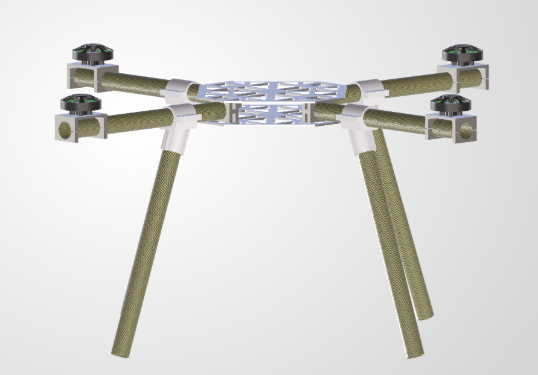
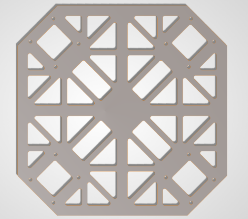
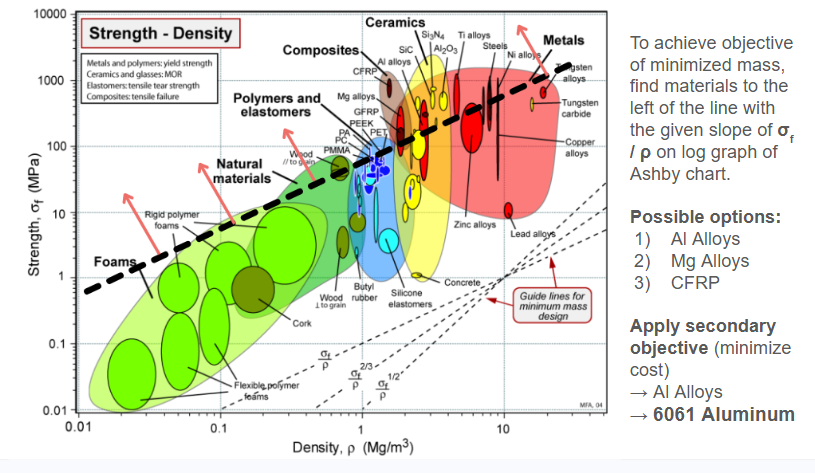
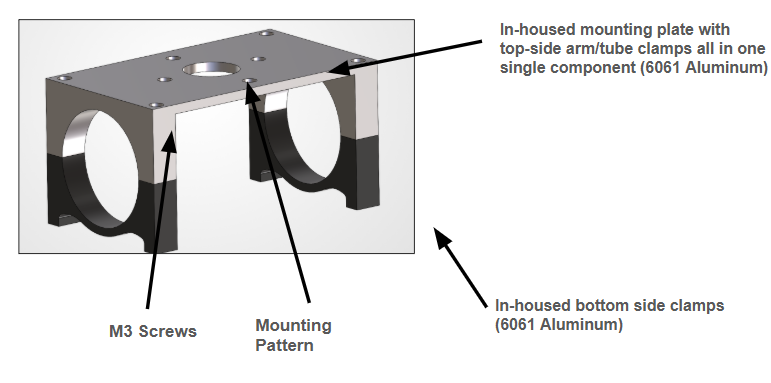
Motor mount design & structural verification
Designed an in-house 6061 aluminum motor-mount component combining the top mounting plate, arm/tube clamps, and lower clamps. The mount uses an M3 fastener pattern. Structural analysis was performed against a load case of 1.5× maximum motor thrust.
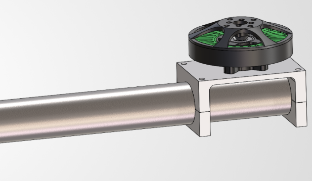
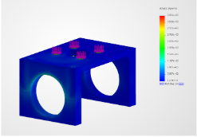
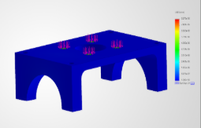
Landing gear development
Designed the complete landing gear assembly using 6061-T6 aluminum components and carbon-fiber tubing. The geometry was changed from a vertical configuration to a 30° angled layout to improve shock absorption. FEA was conducted for a 50 lbf loading condition with a target factor of safety of 2; displacement, factor of safety, and von Mises stress were reviewed.
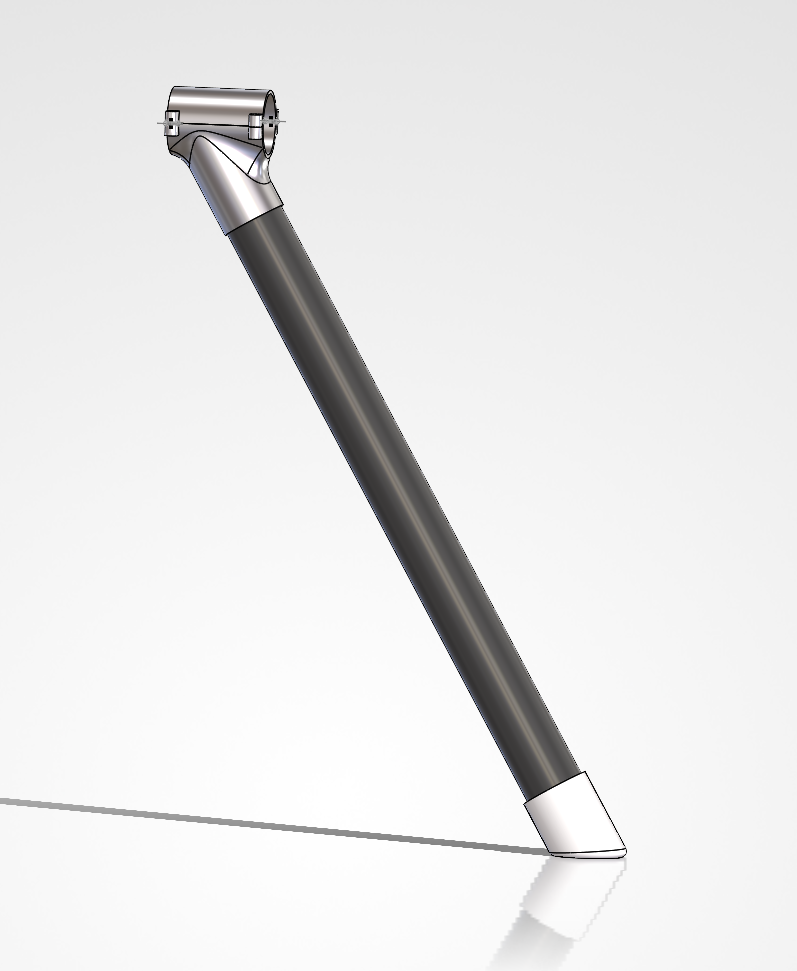
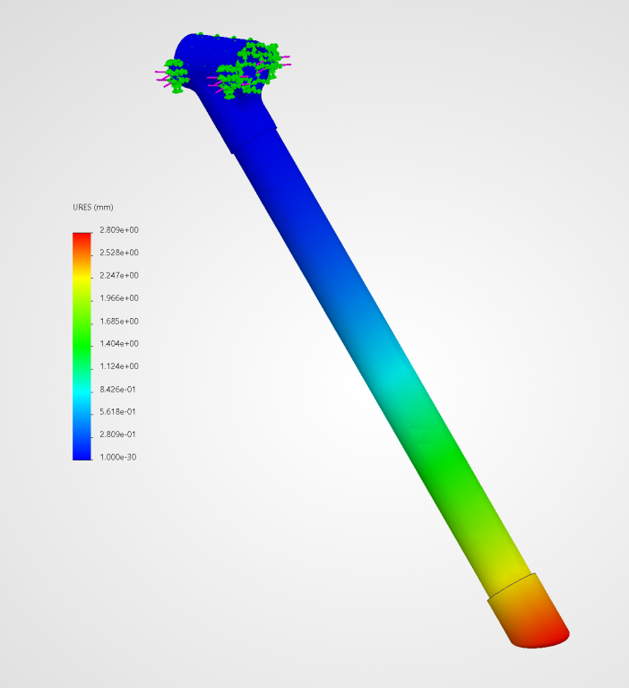
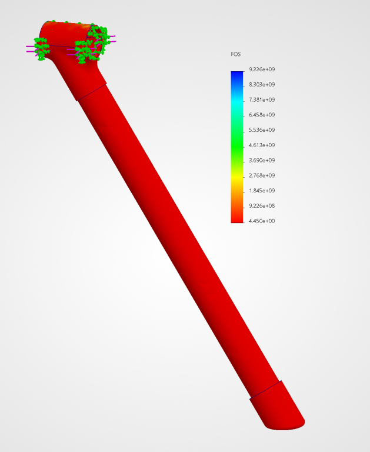
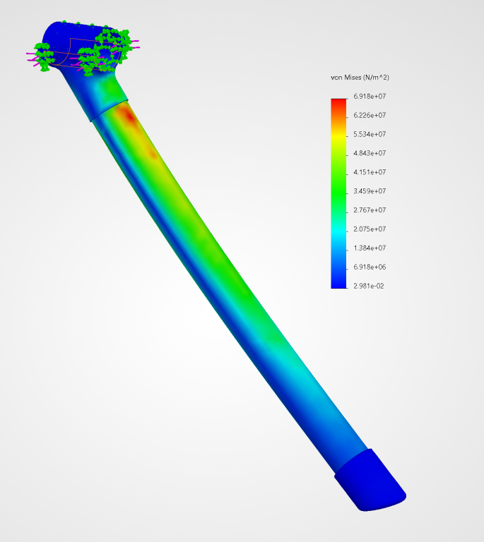
Modal analysis
The modal study showed a first natural frequency of 243 Hz. The stated motor operating range was 100–125 Hz at up to 100% thrust, placing the first mode above that operating range in the analyzed configuration.
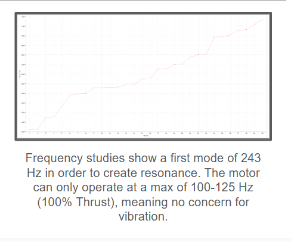